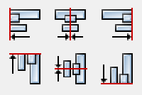

Components
Contents
Components#
gdsfactory provides a generic PDK in gf.components that you can retarget your foundry.
Basic shapes#
Rectangle#
To create a simple rectangle, there are two functions:
gf.components.rectangle() can create a basic rectangle:
[1]:
import gdsfactory as gf
r1 = gf.components.rectangle(size=(4.5, 2), layer=(1, 0))
r1
2023-01-03 02:08:25.509 | INFO | gdsfactory.config:<module>:48 - Load '/home/runner/work/gdsfactory/gdsfactory/gdsfactory' 6.17.0

[1]:
gf.components.bbox() can also create a rectangle based on a bounding box. This is useful if you want to create a rectangle which exactly surrounds a piece of existing geometry. For example, if we have an arc geometry and we want to define a box around it, we can use gf.components.bbox():
[2]:
c = gf.Component()
arc = c << gf.components.bend_circular(radius=10, width=0.5, angle=90, layer=(1, 0))
arc.rotate(90)
# Draw a rectangle around the arc we created by using the arc's bounding box
rect = c << gf.components.bbox(bbox=arc.bbox, layer=(0, 0))
c
/home/runner/work/gdsfactory/gdsfactory/gdsfactory/component.py:1480: UserWarning: Component 'Unnamed_a0384d7b' contains 1 Unnamed cells
warnings.warn(
[2]:
Cross#
The gf.components.cross() function creates a cross structure:
[3]:
gf.components.cross(length=10, width=0.5, layer=(1, 0))

[3]:
Ellipse#
The gf.components.ellipse() function creates an ellipse by defining the major and minor radii:
[4]:
gf.components.ellipse(radii=(10, 5), angle_resolution=2.5, layer=(1, 0))

[4]:
Circle#
The gf.components.circle() function creates a circle:
[5]:
gf.components.circle(radius=10, angle_resolution=2.5, layer=(1, 0))

[5]:
Ring#
The gf.components.ring() function creates a ring. The radius refers to the center radius of the ring structure (halfway between the inner and outer radius).
[6]:
gf.components.ring(radius=5, width=0.5, angle_resolution=2.5, layer=(1, 0))

[6]:
[7]:
gf.components.ring_single(
width=0.5, gap=0.2, radius=10, length_x=4, length_y=2, layer=(1, 0)
)
[7]:
[8]:
import gdsfactory as gf
gf.components.ring_double(
width=0.5, gap=0.2, radius=10, length_x=4, length_y=2, layer=(1, 0)
)
[8]:
[9]:
gf.components.ring_double(
width=0.5,
gap=0.2,
radius=10,
length_x=4,
length_y=2,
layer=(1, 0),
bend=gf.components.bend_circular,
)
[9]:
Bend circular#
The gf.components.bend_circular() function creates an arc. The radius refers to the center radius of the arc (halfway between the inner and outer radius).
[10]:
gf.components.bend_circular(radius=2.0, width=0.5, angle=90, npoints=720, layer=(1, 0))
[10]:
Bend euler#
The gf.components.bend_euler() function creates an adiabatic bend in which the bend radius changes gradually. Euler bends have lower loss than circular bends.
[11]:
gf.components.bend_euler(radius=2.0, width=0.5, angle=90, npoints=720, layer=(1, 0))
[11]:
Tapers#
gf.components.taper()is defined by setting its length and its start and end length. It has two ports, 1 and 2, on either end, allowing you to easily connect it to other structures.
[12]:
gf.components.taper(length=10, width1=6, width2=4, port=None, layer=(1, 0))
[12]:
gf.components.ramp() is a structure is similar to taper() except it is asymmetric. It also has two ports, 1 and 2, on either end.
[13]:
gf.components.ramp(length=10, width1=4, width2=8, layer=(1, 0))
[13]:
Common compound shapes#
The gf.components.L() function creates a L shape with ports on either end named 1 and 2.
[14]:
gf.components.L(width=7, size=(10, 20), layer=(1, 0))

[14]:
The gf.components.C() function creates a C shape with ports on either end named 1 and 2.
[15]:
gf.components.C(width=7, size=(10, 20), layer=(1, 0))
[15]:
Text#
Gdsfactory has an implementation of the DEPLOF font with the majority of english ASCII characters represented (thanks to phidl)
[16]:
gf.components.text(
text="Hello world!\nMultiline text\nLeft-justified",
size=10,
justify="left",
layer=(1, 0),
)
# `justify` should be either 'left', 'center', or 'right'

[16]:
Grid / packer / align / distribute#
Grid#
The gf.components.grid() function can take a list (or 2D array) of objects and arrange them along a grid. This is often useful for making parameter sweeps. If the separation argument is true, grid is arranged such that the elements are guaranteed not to touch, with a spacing distance between them. If separation is false, elements are spaced evenly along a grid. The align_x/align_y arguments specify intra-row/intra-column alignment. Theedge_x/edge_y arguments
specify inter-row/inter-column alignment (unused if separation = True).
[17]:
import gdsfactory as gf
components_list = []
for width1 in [1, 6, 9]:
for width2 in [1, 2, 4, 8]:
D = gf.components.taper(length=10, width1=width1, width2=width2, layer=(1, 0))
components_list.append(D)
c = gf.grid(
components_list,
spacing=(5, 1),
separation=True,
shape=(3, 4),
align_x="x",
align_y="y",
edge_x="x",
edge_y="ymax",
)
c
[17]:
Pack#
The gf.pack() function packs geometries together into rectangular bins. If a max_size is specified, the function will create as many bins as is necessary to pack all the geometries and then return a list of the filled-bin Components.
Here we generate several random shapes then pack them together automatically. We allow the bin to be as large as needed to fit all the Components by specifying max_size = (None, None). By setting aspect_ratio = (2,1), we specify the rectangular bin it tries to pack them into should be twice as wide as it is tall:
[18]:
import numpy as np
import gdsfactory as gf
np.random.seed(5)
D_list = [gf.components.rectangle(size=(i, i)) for i in range(1, 10)]
D_packed_list = gf.pack(
D_list, # Must be a list or tuple of Components
spacing=1.25, # Minimum distance between adjacent shapes
aspect_ratio=(2, 1), # (width, height) ratio of the rectangular bin
max_size=(None, None), # Limits the size into which the shapes will be packed
density=1.05, # Values closer to 1 pack tighter but require more computation
sort_by_area=True, # Pre-sorts the shapes by area
)
D = D_packed_list[0] # Only one bin was created, so we plot that
D

[18]:
Say we need to pack many shapes into multiple 500x500 unit die. If we set max_size = (500,500) the shapes will be packed into as many 500x500 unit die as required to fit them all:
[19]:
np.random.seed(1)
D_list = [
gf.components.ellipse(radii=tuple(np.random.rand(2) * n + 2)) for n in range(120)
]
D_packed_list = gf.pack(
D_list, # Must be a list or tuple of Components
spacing=4, # Minimum distance between adjacent shapes
aspect_ratio=(1, 1), # Shape of the box
max_size=(500, 500), # Limits the size into which the shapes will be packed
density=1.05, # Values closer to 1 pack tighter but require more computation
sort_by_area=True, # Pre-sorts the shapes by area
)
# Put all packed bins into a single device and spread them out with distribute()
F = gf.Component("packed")
[F.add_ref(D) for D in D_packed_list]
F.distribute(elements="all", direction="x", spacing=100, separation=True)
F
/home/runner/work/gdsfactory/gdsfactory/gdsfactory/pack.py:222: UserWarning: unable to pack in one component, creating 4 components
warnings.warn(f"unable to pack in one component, creating {groups} components")

[19]:
Note that the packing problem is an NP-complete problem, so gf.components.packer() may be slow if there are more than a few hundred Components to pack (in that case, try pre-packing a few dozen at a time then packing the resulting bins). Requires the rectpack python package.
Distribute#
The distribute() function allows you to space out elements within a Component evenly in the x or y direction. It is meant to duplicate the distribute functionality present in Inkscape / Adobe Illustrator:

Say we start out with a few random-sized rectangles we want to space out:
[20]:
c = gf.Component("rectangles")
# Create different-sized rectangles and add them to D
[
c.add_ref(
gf.components.rectangle(size=[n * 15 + 20, n * 15 + 20], layer=(2, 0))
).move([n, n * 4])
for n in [0, 2, 3, 1, 2]
]
c
[20]:
Oftentimes, we want to guarantee some distance between the objects. By setting separation = True we move each object such that there is spacing distance between them:
[21]:
D = gf.Component("rectangles_separated")
# Create different-sized rectangles and add them to D
[
D.add_ref(gf.components.rectangle(size=[n * 15 + 20, n * 15 + 20])).move((n, n * 4))
for n in [0, 2, 3, 1, 2]
]
# Distribute all the rectangles in D along the x-direction with a separation of 5
D.distribute(
elements="all", # either 'all' or a list of objects
direction="x", # 'x' or 'y'
spacing=5,
separation=True,
)
D
[21]:
Alternatively, we can spread them out on a fixed grid by setting separation = False. Here we align the left edge (edge = 'min') of each object along a grid spacing of 100:
[22]:
D = gf.Component("spacing100")
[
D.add_ref(gf.components.rectangle(size=[n * 15 + 20, n * 15 + 20])).move((n, n * 4))
for n in [0, 2, 3, 1, 2]
]
D.distribute(
elements="all", direction="x", spacing=100, separation=False, edge="xmin"
) # edge must be either 'xmin' (left), 'xmax' (right), or 'x' (center)
D

[22]:
The alignment can be done along the right edge as well by setting edge = 'max', or along the center by setting edge = 'center' like in the following:
[23]:
D = gf.Component("alignment")
[
D.add_ref(gf.components.rectangle(size=[n * 15 + 20, n * 15 + 20])).move(
(n - 10, n * 4)
)
for n in [0, 2, 3, 1, 2]
]
D.distribute(
elements="all", direction="x", spacing=100, separation=False, edge="x"
) # edge must be either 'xmin' (left), 'xmax' (right), or 'x' (center)
D

[23]:
Align#
The align() function allows you to elements within a Component horizontally or vertically. It is meant to duplicate the alignment functionality present in Inkscape / Adobe Illustrator:
Say we distribute() a few objects, but theyre all misaligned:
[24]:
D = gf.Component("distribute")
# Create different-sized rectangles and add them to D then distribute them
[
D.add_ref(gf.components.rectangle(size=[n * 15 + 20, n * 15 + 20])).move((n, n * 4))
for n in [0, 2, 3, 1, 2]
]
D.distribute(elements="all", direction="x", spacing=5, separation=True)
D

[24]:
we can use the align() function to align their top edges (``alignment = ymax):
[25]:
D = gf.Component("align")
# Create different-sized rectangles and add them to D then distribute them
[
D.add_ref(gf.components.rectangle(size=[n * 15 + 20, n * 15 + 20])).move((n, n * 4))
for n in [0, 2, 3, 1, 2]
]
D.distribute(elements="all", direction="x", spacing=5, separation=True)
# Align top edges
D.align(elements="all", alignment="ymax")
D
[25]:
or align their centers (``alignment = y):
[26]:
D = gf.Component("distribute_align_y")
# Create different-sized rectangles and add them to D then distribute them
[
D.add_ref(gf.components.rectangle(size=[n * 15 + 20, n * 15 + 20])).move((n, n * 4))
for n in [0, 2, 3, 1, 2]
]
D.distribute(elements="all", direction="x", spacing=5, separation=True)
# Align top edges
D.align(elements="all", alignment="y")
D
[26]:
other valid alignment options include 'xmin', 'x', 'xmax', 'ymin', 'y', and 'ymax'
Boolean / outline / offset / invert#
There are several common boolean-type operations available in the geometry library. These include typical boolean operations (and/or/not/xor), offsetting (expanding/shrinking polygons), outlining, and inverting.
Boolean#
The gf.geometry.boolean() function can perform AND/OR/NOT/XOR operations, and will return a new geometry with the result of that operation.
Speedup note: The num_divisions argument can be used to divide up the geometry into multiple rectangular regions and process each region sequentially (which is more computationally efficient). If you have a large geometry that takes a long time to process, try using num_divisions = [10,10] to optimize the operation.
[27]:
import gdsfactory as gf
E = gf.components.ellipse(radii=(10, 5), layer=(1, 0))
R = gf.components.rectangle(size=[15, 5], layer=(2, 0))
C = gf.geometry.boolean(
A=E, B=R, operation="not", precision=1e-6, num_divisions=[1, 1], layer=(3, 0)
)
# Other operations include 'and', 'or', 'xor', or equivalently 'A-B', 'B-A', 'A+B'
# Plot the originals and the result
D = gf.Component("bool")
D.add_ref(E)
D.add_ref(R).movey(-1.5)
D.add_ref(C).movex(30)
D
[27]:
To learn how booleans work you can try all the different operations not, and, or, xor
[28]:
import gdsfactory as gf
operation = "not"
operation = "and"
operation = "or"
operation = "xor"
r1 = (8, 8)
r2 = (11, 4)
r1 = (80, 80)
r2 = (110, 40)
angle_resolution = 0.1
c1 = gf.components.ellipse(radii=r1, layer=(1, 0), angle_resolution=angle_resolution)
c2 = gf.components.ellipse(radii=r2, layer=(1, 0), angle_resolution=angle_resolution)
[29]:
%time
c3 = gf.geometry.boolean_klayout(
c1, c2, operation=operation, layer1=(1, 0), layer2=(1, 0), layer3=(1, 0)
) # KLayout booleans
c3
2023-01-03 02:08:31.399 | INFO | gdsfactory.component:_write_library:1496 - Wrote to '/tmp/tmpkw8om7ci/gdsfactory/ellipse_4aa83906.gds'
2023-01-03 02:08:31.408 | INFO | gdsfactory.component:_write_library:1496 - Wrote to '/tmp/tmp6qcc4wv8/gdsfactory/ellipse_cb56ffd1.gds'
CPU times: user 2 s, sys: 1 s, total: 3 s
Wall time: 6.68 s
[29]:
[30]:
%time
c4 = gf.geometry.boolean(c1, c2, operation=operation)
c4
CPU times: user 2 s, sys: 0 ns, total: 2 s
Wall time: 5.25 s
[30]:
Offset#
The offset() function takes the polygons of the input geometry, combines them together, and expands/contracts them. The function returns polygons on a single layer it does not respect layers.
Speedup note: The num_divisions argument can be used to divide up the geometry into multiple rectangular regions and process each region sequentially (which is more computationally efficient). If you have a large geometry that takes a long time to process, try using num_divisions = [10,10] to optimize the operation.
[31]:
import gdsfactory as gf
# Create `T`, an ellipse and rectangle which will be offset (expanded / contracted)
T = gf.Component("ellipse_and_rectangle")
e = T << gf.components.ellipse(radii=(10, 5), layer=(1, 0))
r = T << gf.components.rectangle(size=[15, 5], layer=(2, 0))
r.move([3, -2.5])
Texpanded = gf.geometry.offset(T, distance=2, precision=1e-6, layer=(2, 0))
Texpanded.name = "expanded"
Tshrink = gf.geometry.offset(T, distance=-1.5, precision=1e-6, layer=(2, 0))
Tshrink.name = "shrink"
# Plot the original geometry, the expanded, and the shrunk versions
offsets = gf.Component("top")
t1 = offsets.add_ref(T)
t2 = offsets.add_ref(Texpanded)
t3 = offsets.add_ref(Tshrink)
offsets.distribute([t1, t2, t3], direction="x", spacing=5)
offsets
[31]:
Outline#
The outline() function takes the polygons of the input geometry then performs an offset and not boolean operation to create an outline. The function returns polygons on a single layer it does not respect layers.
Speedup note: The num_divisions argument can be used to divide up the geometry into multiple rectangular regions and process each region sequentially (which is more computationally efficient). If you have a large geometry that takes a long time to process, try using num_divisions = [10,10] to optimize the operation.
[32]:
import gdsfactory as gf
# Create a blank device and add two shapes
X = gf.Component("outline_demo")
X.add_ref(gf.components.cross(length=25, width=1, layer=(1, 0)))
X.add_ref(gf.components.ellipse(radii=[10, 5], layer=(2, 0)))
O = gf.geometry.outline(X, distance=1.5, precision=1e-6, layer=(3, 0))
# Plot the original geometry and the result
c = gf.Component("outline_compare")
c.add_ref(X)
c.add_ref(O).movex(30)
c

[32]:
The open_ports argument opens holes in the outlined geometry at each Port location.
If not False, holes will be cut in the outline such that the Ports are not covered.
If True, the holes will have the same width as the Ports.
If a float, the holes will be widened by that value.
If a float equal to the outline
distance, the outline will be flush with the port (useful positive-tone processes).
[33]:
gf.components.L(width=7, size=(10, 20), layer=(1, 0))

[33]:
[34]:
# Outline the geometry and open a hole at each port
gf.geometry.outline(offsets, distance=5, open_ports=False, layer=(2, 0)) # No holes

[34]:
[35]:
gf.geometry.outline(
offsets, distance=5, open_ports=True, layer=(2, 0)
) # Hole is the same width as the port
[35]:
[36]:
gf.geometry.outline(
offsets, distance=5, open_ports=10, layer=(2, 0)
) # Change the hole size by entering a float

[36]:
[37]:
gf.geometry.outline(
offsets, distance=5, open_ports=5, layer=(2, 0)
) # Creates flush opening (open_ports > distance)

[37]:
Invert#
The gf.boolean.invert() function creates an inverted version of the input geometry. The function creates a rectangle around the geometry (with extra padding of distance border), then subtract all polygons from all layers from that rectangle, resulting in an inverted version of the geometry.
Speedup note: The num_divisions argument can be used to divide up the geometry into multiple rectangular regions and process each region sequentially (which is more computationally efficient). If you have a large geometry that takes a long time to process, try using num_divisions = [10,10] to optimize the operation.
[38]:
import gdsfactory as gf
E = gf.components.ellipse(radii=(10, 5))
D = gf.geometry.invert(E, border=0.5, precision=1e-6, layer=(2, 0))
D
[38]:
Union#
The union() function is a join function, and is functionally identical to the OR operation of gf.boolean(). The one difference is its able to perform this function layer-wise, so each layer can be individually combined.
[39]:
import gdsfactory as gf
D = gf.Component("union")
e0 = D << gf.components.ellipse(layer=(1, 0))
e1 = D << gf.components.ellipse(layer=(2, 0))
e2 = D << gf.components.ellipse(layer=(3, 0))
e3 = D << gf.components.ellipse(layer=(4, 0))
e4 = D << gf.components.ellipse(layer=(5, 0))
e5 = D << gf.components.ellipse(layer=(6, 0))
e1.rotate(15 * 1)
e2.rotate(15 * 2)
e3.rotate(15 * 3)
e4.rotate(15 * 4)
e5.rotate(15 * 5)
D

[39]:
[40]:
# We have two options to unioning - take all polygons, regardless of
# layer, and join them together (in this case on layer (2,0) like so:
D_joined = gf.geometry.union(D, by_layer=False, layer=(2, 0))
D_joined

[40]:
[41]:
# Or we can perform the union operate by-layer
D_joined_by_layer = gf.geometry.union(D, by_layer=True)
D_joined_by_layer
[41]:
XOR / diff#
The xor_diff() function can be used to compare two geometries and identify where they are different. Specifically, it performs a layer-wise XOR operation. If two geometries are identical, the result will be an empty Component. If they are not identical, any areas not shared by the two geometries will remain.
[42]:
import gdsfactory as gf
A = gf.Component("A")
A.add_ref(gf.components.ellipse(radii=[10, 5], layer=(1, 0)))
A.add_ref(gf.components.text("A")).move([3, 0])
B = gf.Component("B")
B.add_ref(gf.components.ellipse(radii=[11, 4], layer=(1, 0))).movex(4)
B.add_ref(gf.components.text("B")).move([3.2, 0])
X = gf.geometry.xor_diff(A=A, B=B, precision=1e-6)
# Plot the original geometry and the result
# Upper left: A / Upper right: B
# Lower left: A and B / Lower right: A xor B "diff" comparison
D = gf.Component("xor_diff")
D.add_ref(A).move([-15, 25])
D.add_ref(B).move([15, 25])
D.add_ref(A).movex(-15)
D.add_ref(B).movex(-15)
D.add_ref(X).movex(15)
D

[42]:
Trim#
trim returns the portion of that component within that domain preserving all layers and (possibly) ports.
Its like the opposite of add_padding, and also allows non-rectangular shapes for the padding removal.
Useful when resizing an existing component for simulations
[43]:
c = gf.components.straight_pin(length=10, taper=None)
c
[43]:
[44]:
trimmed_c = gf.geometry.trim(component=c, domain=[[0, -5], [0, 5], [5, 5], [5, -5]])
trimmed_c
[44]:
Lithography structures#
Step-resolution#
The gf.components.litho_steps() function creates lithographic test structure that is useful for measuring resolution of photoresist or electron-beam resists. It provides both positive-tone and negative-tone resolution tests.
[45]:
D = gf.components.litho_steps(
line_widths=[1, 2, 4, 8, 16], line_spacing=10, height=100, layer=(1, 0)
)
D

[45]:
Calipers (inter-layer alignment)#
The gf.components.litho_calipers() function is used to detect offsets in multilayer fabrication. It creates a two sets of notches on different layers. When an fabrication error/offset occurs, it is easy to detect how much the offset is because both center-notches are no longer aligned.
[46]:
D = gf.components.litho_calipers(
notch_size=[1, 5],
notch_spacing=2,
num_notches=7,
offset_per_notch=0.1,
row_spacing=0,
layer1=(1, 0),
layer2=(2, 0),
)
D

[46]:
Paths#
See Path tutorial for more details this is just an enumeration of the available built-in Path functions
Circular arc#
[47]:
P = gf.path.arc(radius=10, angle=135, npoints=720)
f = P.plot()
Straight#
[48]:
import gdsfactory as gf
P = gf.path.straight(length=5, npoints=100)
f = P.plot()

Euler curve#
Also known as a straight-to-bend, clothoid, racetrack, or track transition, this Path tapers adiabatically from straight to curved. Often used to minimize losses in photonic straights. If p < 1.0, will create a partial euler curve as described in Vogelbacher et. al.https://dx.doi.org/10.1364/oe.27.031394. If the use_eff argument is false, radius corresponds to minimum radius of curvature of the bend. If use_eff is true, radius corresponds to the effective radius of the
bend The curve will be scaled such that the endpoints match an arc with parameters radius and angle.
[49]:
P = gf.path.euler(radius=3, angle=90, p=1.0, use_eff=False, npoints=720)
f = P.plot()

Smooth path from waypoints#
[50]:
import numpy as np
import gdsfactory as gf
points = np.array([(20, 10), (40, 10), (20, 40), (50, 40), (50, 20), (70, 20)])
P = gf.path.smooth(
points=points,
radius=2,
bend=gf.path.euler,
use_eff=False,
)
f = P.plot()

Delay spiral#
[51]:
c = gf.components.spiral_double()
c
[51]:
[52]:
c = gf.components.spiral_inner_io()
c
[52]:
[53]:
c = gf.components.spiral_external_io()
c
[53]:
Importing GDS files#
gf.import_gds() allows you to easily import external GDSII files. It imports a single cell from the external GDS file and converts it into a gdsfactory component.
[54]:
D = gf.components.ellipse()
D.write_gds("myoutput.gds")
D2 = gf.import_gds(gdspath="myoutput.gds", cellname=None, flatten=False)
D2
2023-01-03 02:08:36.781 | INFO | gdsfactory.component:_write_library:1496 - Wrote to 'myoutput.gds'
[54]:
LayerColors#
The LayerColors class allows you to predefine a collection of layers and specify their properties including: gds layer/datatype, name, and color. It also comes with a handy preview function called gf.layers.preview_layerset()
[55]:
import gdsfactory as gf
lys = gf.layers.LayerColors()
lys.add_layer("p", color="lightblue", gds_layer=21, gds_datatype=0)
lys.add_layer("p+", color="blue", gds_layer=23, gds_datatype=0)
lys.add_layer("p++", color="darkblue", gds_layer=25, gds_datatype=0)
lys.add_layer("n", color="lightgreen", gds_layer=20, gds_datatype=0)
lys.add_layer("n+", color="green", gds_layer=22, gds_datatype=0)
lys.add_layer("n++", color="darkgreen", gds_layer=24, gds_datatype=0)
D = gf.layers.preview_layerset(lys, size=100, spacing=100)
D
[55]:
Useful contact pads / connectors#
These functions are common shapes with ports, often used to make contact pads
[56]:
c = gf.components.compass(size=(4, 2), layer=(1, 0))
c
[56]:
[57]:
c = gf.components.nxn(north=3, south=4, east=0, west=0)
c

[57]:
[58]:
c = gf.components.pad()
c

[58]:
[59]:
c = gf.components.pad_array90(columns=3)
c
[59]:
Chip / die template#
[60]:
import gdsfactory as gf
D = gf.components.die(
size=(10000, 5000), # Size of die
street_width=100, # Width of corner marks for die-sawing
street_length=1000, # Length of corner marks for die-sawing
die_name="chip99", # Label text
text_size=500, # Label text size
text_location="SW", # Label text compass location e.g. 'S', 'SE', 'SW'
layer=(2, 0),
bbox_layer=(3, 0),
)
D
[60]:
Optimal superconducting curves#
The following structures are meant to reduce current crowding in superconducting thin-film structures (such as superconducting nanowires). They are the result of conformal mapping equations derived in Clem, J. & Berggren, K. Geometry-dependent critical currents in superconducting nanocircuits. Phys. Rev.B 84, 127 (2011).
[61]:
import gdsfactory as gf
c = gf.components.optimal_hairpin(
width=0.2, pitch=0.6, length=10, turn_ratio=4, num_pts=50, layer=(2, 0)
)
c
[61]:
[62]:
c = gf.c.optimal_step(
start_width=10,
end_width=22,
num_pts=50,
width_tol=1e-3,
anticrowding_factor=1.2,
symmetric=False,
layer=(2, 0),
)
c

[62]:
[63]:
c = gf.c.optimal_90deg(width=100.0, num_pts=15, length_adjust=1, layer=(2, 0))
c

[63]:
[64]:
c = gf.c.snspd(
wire_width=0.2,
wire_pitch=0.6,
size=(10, 8),
num_squares=None,
turn_ratio=4,
terminals_same_side=False,
layer=(2, 0),
)
c
[64]:
Copying and extracting geometry#
[65]:
E = gf.Component()
E.add_ref(gf.components.ellipse(layer=(1, 0)))
D = E.extract(layers=[(1, 0)])
D
/home/runner/work/gdsfactory/gdsfactory/gdsfactory/component.py:1480: UserWarning: Component 'Unnamed_004e16fb' contains 1 Unnamed cells
warnings.warn(
[65]:
[66]:
import gdsfactory as gf
X = gf.components.ellipse(layer=(2, 0))
c = X.copy()
c
/home/runner/work/gdsfactory/gdsfactory/gdsfactory/component.py:1480: UserWarning: Component 'Unnamed_a02a9178' contains 1 Unnamed cells
warnings.warn(

[66]:
[67]:
gf.components.copy_layers(gf.components.straight, layers=((1, 0), (2, 0)))
[67]:
Dummy Fill / Tiling#
To keep constant density in some layers you can add dummy fill rectangles.
[68]:
coupler_lengths = [10, 20, 30, 40, 50, 60, 70, 80]
coupler_gaps = [0.1, 0.2, 0.3, 0.4, 0.5, 0.6, 0.7, 0.8]
delta_lengths = [10, 100, 200, 300, 400, 500, 500]
mzi = gf.components.mzi_lattice(
coupler_lengths=coupler_lengths,
coupler_gaps=coupler_gaps,
delta_lengths=delta_lengths,
)
# Add fill
c = gf.Component("component_with_fill")
layers = [(1, 0)]
fill_size = [0.5, 0.5]
c << gf.fill_rectangle(
mzi,
fill_size=fill_size,
fill_layers=layers,
margin=5,
fill_densities=[0.8] * len(layers),
avoid_layers=layers,
)
c << mzi
c.show(show_ports=True)